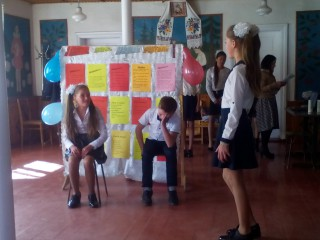
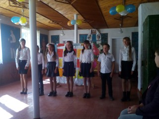

День вчителя
Другого жовтня в приміщенні Замогильної школи відбулося свято до Дня учителя, проведене педагогом-організатором Григоращук Т.І. та учнями 7 та 9 класів.
Цікавий і змістовний захід прикував увагу глядачів своєю нетрадиційністю, невимушеністю і творчим підходом. Було використано гумористичні сценки зі шкільного життя, вкраплено танець дітей і вчителів.

На святі панувала доброзичлива атмосфера та веселий настрій. Нетрадиційна гра «Чарівний капелюх» змусила глядачів бути співучасниками, дала багато позитиву та заряд бадьорості.